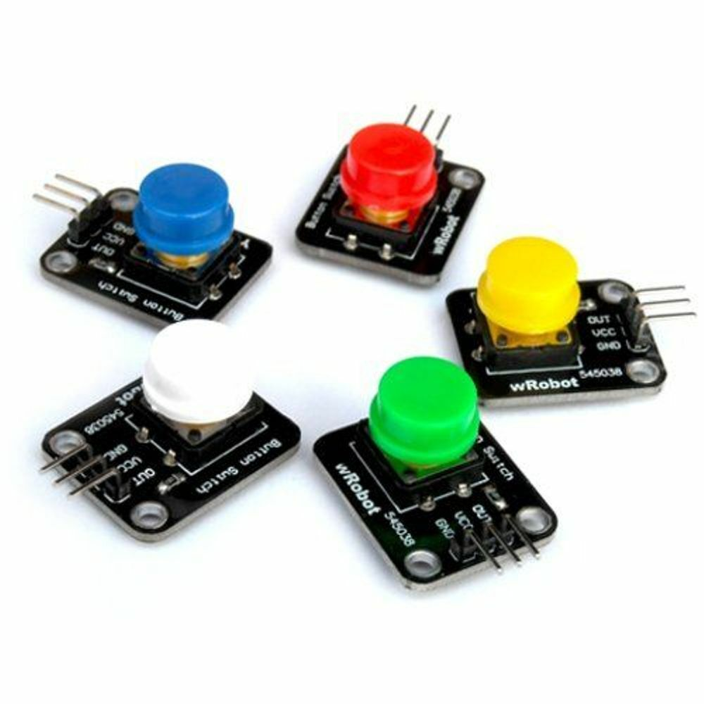

Portable gaming system
Portable gaming
History
The first portable gaming system was released in 1976 by Mattel inc. The gadget had just one very simple game Auto Race, but still got very popular and left the company quite profitable.
A few years later in 1979 the Milton Bradley Microvision came out. This system was much more interesting. It had interchangeable game cartridges which allowed players to buy different games and put them in the same console. The excitement of users grew and Microvision became very popular as well.
Portable gaming evolved year after year. Gaming experience was becoming better and more entertaining. Colorful higher resolution screens, new control elements and other improvements gave game developers a huge field to play around and make an enormous amount of games.
Impact on the gaming industry and portable devices
Because game developers progressed with every product they made, they needed more processing power to carry through their ideas. Therefore tech companies worked hard to put more in little hand-held gaming systems. Computer chips became smaller, faster; picture, sound quality, battery life improved. Hand-held gaming one of the first started the progression of portable, mobile technology. Without such things like game-boy or Atari’s Lynx there probably wouldn’t be any smartphones, tablets or other smart portable gadgets.
Arduino portable gaming console
I decided to build one myself. But starting with something complex like Nintendo Switch or PS Vita feels irrational, I want to put together a very simple gaming console and really get to know every single element, learn how it works. And improve it in the future.
Why I chose Arduino
Arduino (according to the official web-site) is an open-source electronic prototyping platform enabling users to create interactive electronic objects. It has enough power to run simple games and is quite simple to learn. Plus you can find a lot of accessories like joysticks, buttons and speakers for it with ease.
Examples that already exist
Arduino being such a great tool has a huge fan-base. Because of that there is a ginormous amount of projects already made. Including gaming systems.
1. Arduino Pocket Game Console + A-maze – game by Alojz Jacob.
link2. Arduino Mini Tetris Thumbstick controlled.
link3. LCD Hill Run v2 Runner Game.
linkMy vision
As I have already said I want to build a very simple gaming system.
I am going to use a matrix display.

It’s pretty limited for gaming purposes but enough for what I am planning to create.
For controls there I will use three buttons and one switch to turn the system on/off.
With this set of parts the device could potentially run Tetris, racing games, brick breaker and a few other arcade games. And of course some adaptations of modern mobile games, as they usually have very simple controls.
Conclusion
That’s my plan. And for now before putting it all together I should learn about Arduino and the matrix displays.
If you have any ideas or questions email me: konoejane@icloud.com
Check this website for updates. Have a great day)